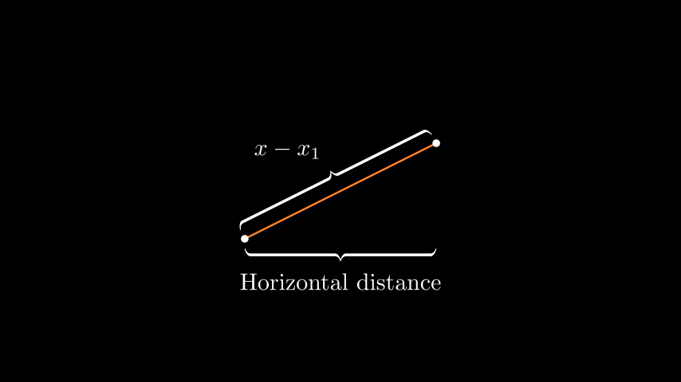
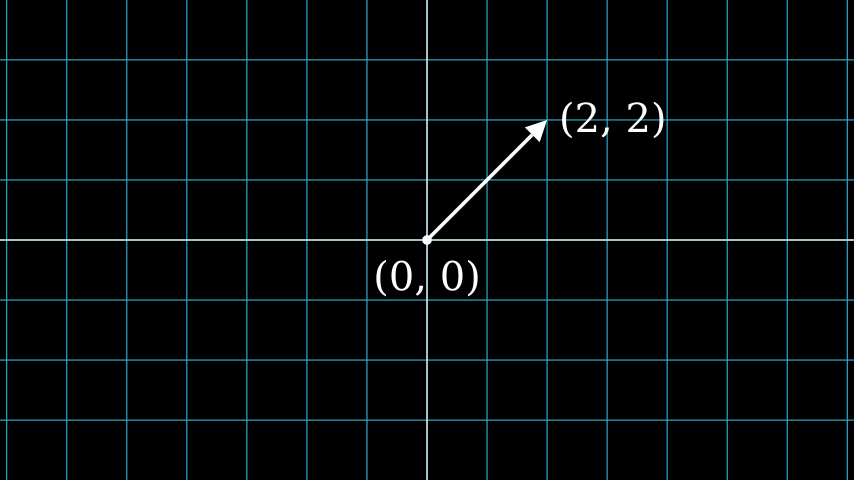
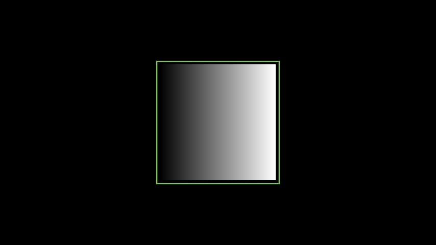
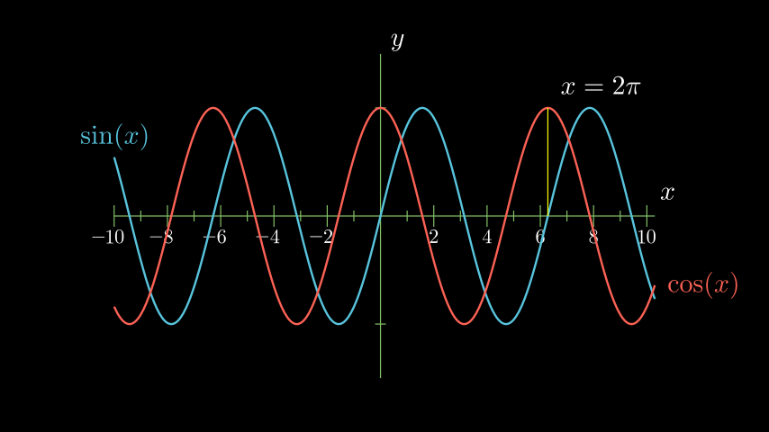
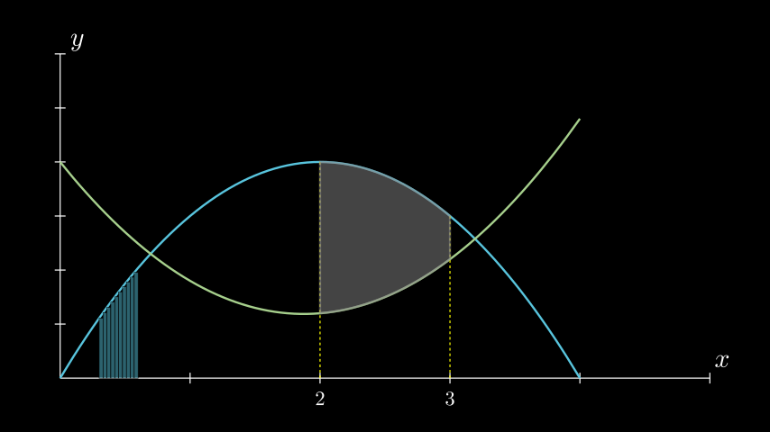
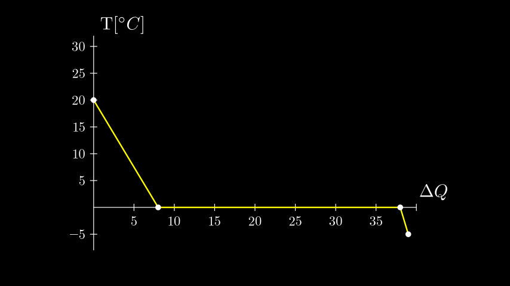
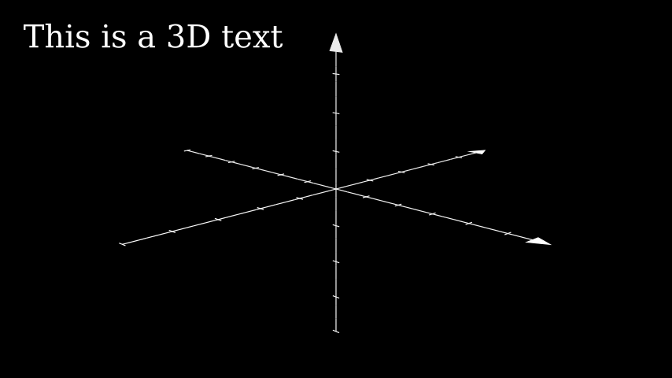
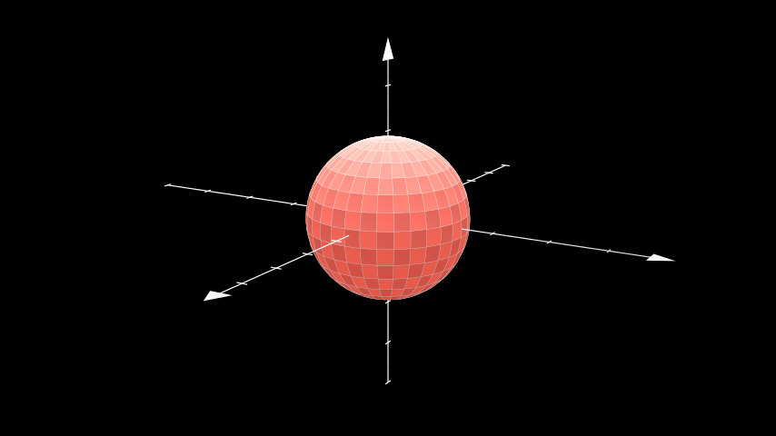
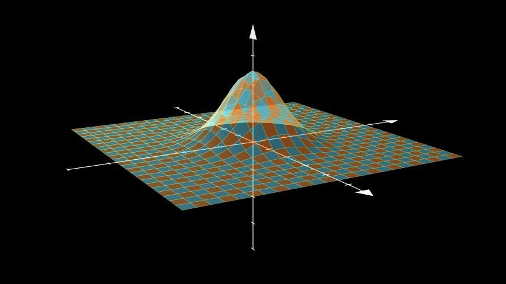

示例库
基本概念
示例：ManimCELogo
ref_classes: MathTex Circle Square Triangle
示例：大括号注释

ref_classes:
Brace
ref_methods: Brace.get_text Brace.get_tex
示例：矢量箭头

ref_classes: Dot Arrow NumberPlane Text
示例：来自数组的渐变图像

ref_classes: ImageMobject
示例：布尔运算
ref_classes:
Union Intersection Exclusion
动画
示例：图形上移动的点
ref_classes:
Circle Dot Line GrowFromCenter Transform MoveAlongPath Rotating
示例：周围移动
| Python | |
|---|---|
Mobject.shift VMobject.set_fill Mobject.scale Mobject.rotate
示例：移动角度
ref_classes:
Angle
ref_methods: Mobject.rotate
提示：你可以同时使用多个
ValueTracker。
示例：移动点
示例：将组移至目的地
示例：移动框框
ref_modules:
manim.mobject.svg.tex_mobject
ref_classes: MathTex SurroundingRectangle
示例：旋转更新器
ref_methods:
Mobject.add_updater Mobject.remove_updater
示例：点与踪迹
ref_classes:
Rotating
ref_methods: VMobject.set_points_as_corners Mobject.add_updater
使用 Manim 绘图
示例：正余弦函数图

ref_modules:
manim.mobject.coordinate_systems
ref_classes: MathTex
ref_methods: Axes.plot Axes.get_vertical_line_to_graph Axes.input_to_graph_point Axes.get_axis_labels
示例：参数最小值
示例：图形面积图

ref_modules:
manim.mobject.coordinate_systems
ref_methods: Axes.plot Axes.get_vertical_line_to_graph Axes.get_area Axes.get_axis_labels
示例：轴上的多边形
ref_classes:
Axes Polygon
示例：热力图

ref_modules:
manim.mobject.coordinate_systems
ref_methods: Axes.plot_line_graph Axes.get_axis_labels
特殊相机设置
示例：跟随图形相机
ref_modules:
manim.scene.moving_camera_scene
ref_classes: MovingCameraScene MoveAlongPath Restore
ref_methods: Axes.plot Mobject.add_updater
示例：移动缩放场景
ref_modules:
manim.scene.zoomed_scene
ref_classes: ZoomedScene BackgroundRectangle UpdateFromFunc
ref_methods: Mobject.add_updater ZoomedScene.get_zoomed_display_pop_out_animation
示例：固定框架 MObject 测试

| Python | |
|---|---|
示例：三维光源位置

ref_classes:
ThreeDScene ThreeDAxes Surface
ref_methods: ThreeDScene.set_camera_orientation
示例：三维相机旋转
ref_classes:
ThreeDScene ThreeDAxes
ref_methods: ThreeDScene.begin_ambient_camera_rotation ThreeDScene.stop_ambient_camera_rotation
示例：三维相机错觉旋转
ref_classes:
ThreeDScene ThreeDAxes
ref_methods: ThreeDScene.begin_3dillusion_camera_rotation ThreeDScene.stop_3dillusion_camera_rotation
示例：三维曲面图

ref_classes:
ThreeDScene Surface
高级项目
示例：打开Manim
ref_classes:
Tex MathTex Write FadeIn LaggedStart NumberPlane Create
ref_methods: NumberPlane.prepare_for_nonlinear_transform
示例：正弦曲线单位圆
ref_classes: MathTex Circle Dot Line VGroup
ref_methods: Mobject.add_updater Mobject.remove_updater
ref_functions: always_redraw